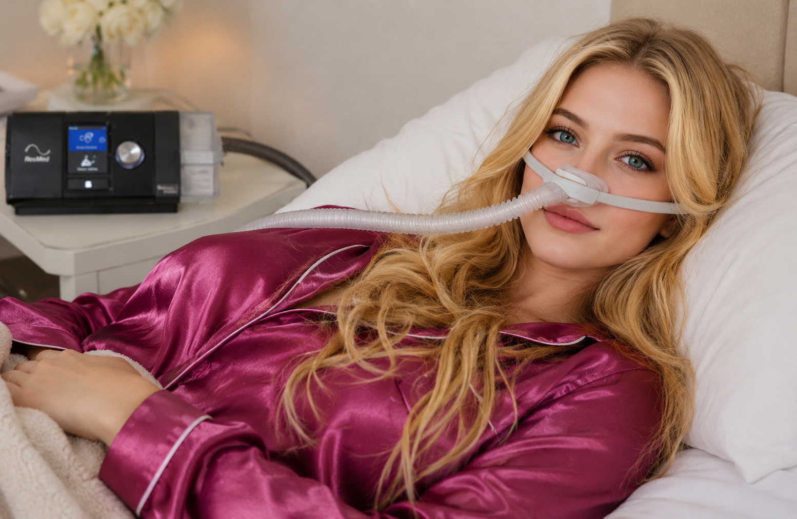
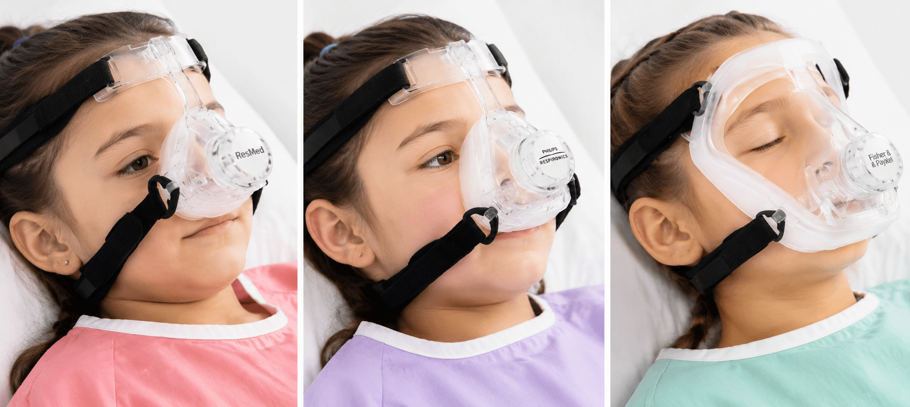
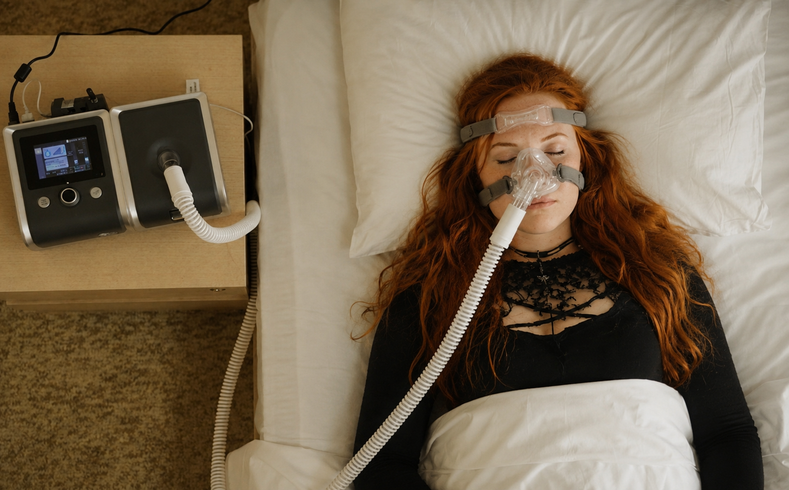
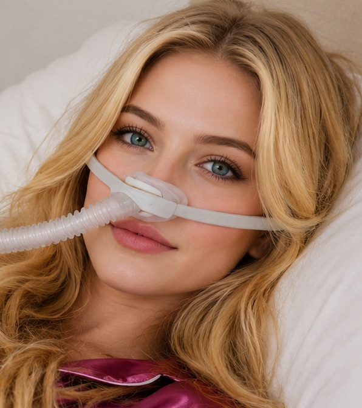

CPAP
Presión Positiva Continua en las Vías Respiratorias
¿Por qué el CPAP puede ser la opción adecuada para usted?

Apnea del sueño y ronquidos fuertes
Ronquidos repetitivos, jadeos o despertarse repentinamente durante el sueño son señales de colapso de las vías respiratorias. El CPAP mantiene las vías respiratorias abiertas, permitiendo una respiración continua y reparadora durante toda la noche.

Mejor sueño y más energía
Despertarse agotado, incluso después de una noche completa de sueño, suele estar relacionado con una mala oxigenación. El CPAP ayuda a restaurar los ciclos normales del sueño, mejorando la energía, la concentración y el bienestar general.

Soporte respiratorio por la noche
El CPAP puede ayudar a reducir el esfuerzo respiratorio durante el sueño y mejorar los niveles de oxígeno, especialmente en personas con problemas respiratorios o cardíacos.

Opciones de máscaras y comodidad
Elegir la máscara correcta (nasal, facial completa o bajo la nariz) es clave para la comodidad y efectividad. Un ajuste adecuado ayuda a prevenir fugas y mejora la tolerancia.

Problemas comunes y soluciones
Problemas como sequedad, incomodidad, fugas de aire o quitarse la máscara durante el sueño son comunes. Normalmente pueden corregirse con pequeños ajustes.

Cómo adaptarse al CPAP
Adaptarse al CPAP requiere tiempo. Con el enfoque adecuado, la mayoría de las personas pueden sentirse cómodas y beneficiarse completamente de la terapia.
El CPAP es una herramienta simple pero poderosa cuando se utiliza correctamente. Si no está seguro sobre su máscara, configuración o comodidad, puedo guiarle paso a paso para ayudarle a usar su equipo de manera efectiva y mejorar su respiración y sueño.